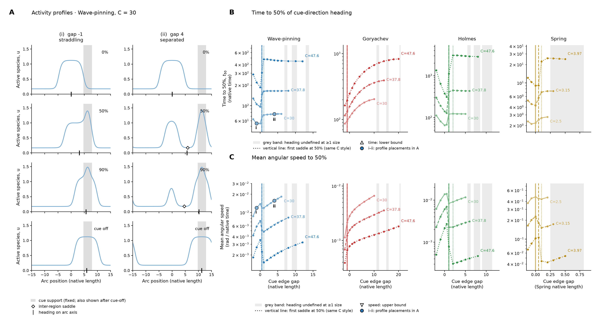

Data generated 2026-10-22T20:03:17.235122+00:00; all four native relaxation producers finished.
Main PDF · Complete supplement, including every round-2 page · Text legend · 50% source coordinates and topology

A. Native Wave-pinning active species u versus arc position centred on the incumbent’s initial centre, at C = 30 for (i) gap −1 (straddling) and (ii) gap 4 (separated). Rows show 0%, 50% and 90% of the target heading under continuous cue, then the final cue-free profile. Grey shading marks the fixed cue support in every row; open diamonds mark an inter-region saddle where resolved, and black ticks on the arc axis mark heading. Each column shares its y-scale.
B. Time to 50% of the angle from initial activity-vector heading to the cue direction versus initial cue edge gap (near edge of cue support minus the incumbent’s 10%-contrast boundary). C. Mean angular speed over that turn, equal to half the target angle divided by t₅₀. Time and length use each model’s native units; speed is radians per native time. Spring retains its native mechanical units. Lighter solid, intermediate dashed and darker dotted curves denote increasing C, labelled at each line end. Enlarged filled i–ii markers identify A in both Wave-pinning plots. Both readouts are evaluated with the cue continuously on; points interpolate the saved 50% crossing brackets.
Vertical lines mark the first tested gap with two resolved regions and a saddle at the 50% crossing for each C, using that size’s line style; the existing periodic watershed detector is applied to the native saved-field interpolant. Light grey bands mark sampled near-antipode placements with undefined heading at one or more sizes (activity-vector coherence R < 0.05 or a cancellation interval); that size’s curve breaks there. Open up-triangles mark censored time lower bounds, and matching open down-triangles mark speed upper bounds; horizon caps are not measured values.
For the relaxation row only, cue-off occurs at 95% heading or at 20,000 if 95% is not reached, restarting from the full native event state after an identical cue-on replay. No-cue relaxation stops when max |∂u/∂t| reaches the existing tolerance 2.2683 × 10⁻⁷ (native activity per native time; the original 10⁻⁴ scaled-RHS tolerance over 1,000 time units), or after four times the cue-on duration. i: cue off at 95% heading, t = 790.5; relaxed for 258.6, stopped at stationarity; ii: cue off at 95% heading, t = 227.6; relaxed for 291.3, stopped at stationarity.
deBelly is excluded from rings.
Cellular measurement motivated by this assay: photoactivation at varying offsets from the leading-edge boundary in WGD+ versus WGD− cells, with time to half-turn as the readout.
Methods, source provenance and reproducibility · Collection audit